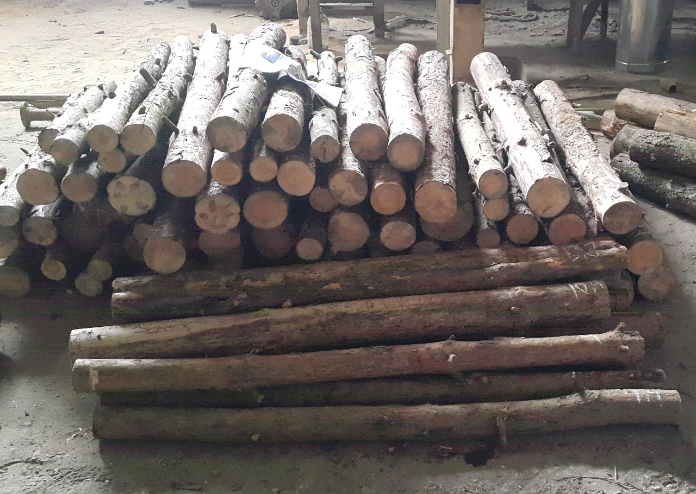
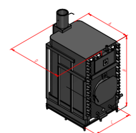
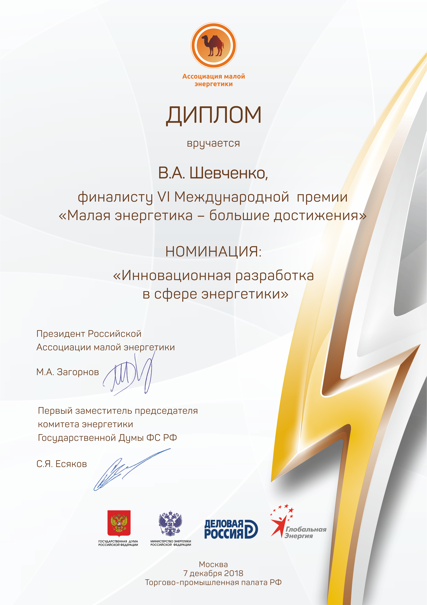
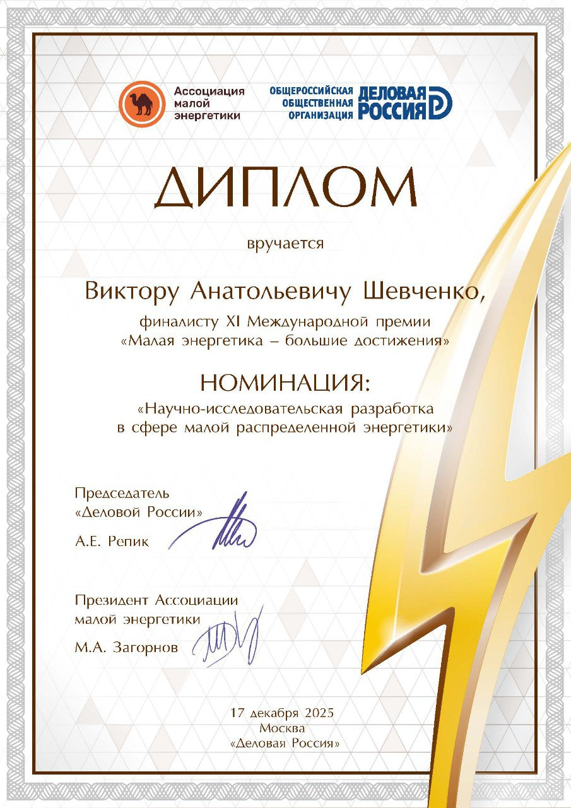
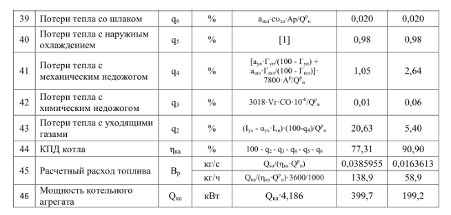

(1) (1).png)
Предлагаем к приобретению инновационный промышленный твердотопливный котёл
длительного горения "РПКТЭК - 560" , собственной разработки. Идеально подходит для
котельных, максимальной мощностью от 500 до 4000 кВт. Расчёты себестоимости тепловой
энергии, затрат на организацию пункта производства тепловой энергии, при установке в них
котлов "РПКТЭК - 560 ", для таких котельных, приведены в низу страницы сайта.
Регулируемая мощность от 50 до 500 кВт, топка из нержавеющих жаропрочных сталей.
Вне конкуренции! Рентабельное теплоснабжение в любой локации.
При эксплуатации "РПКТЭК - 560 " себестоимость отопления, ГВС, существенно меньше, чем при
применении любых других котлов, работающих на газе, угле, щепе, твёрдом топливе.
Уникальность, фишка:
"РПКТЭК-560" единственный на рынке, промышленный твердотопливный котёл, технические характеристики которого определены, подтверждены официально! В том числе расход топлива для производства каждой единицы тепловой энергии. Что позволяет рассчитывать, на перспективу, реальную себестоимость производимой тепловой энергии, себестоимость отопления. В том случае, если любые другие производители промышленных твердотопливных котлов определят, официально, технические характеристики своих изделий, то их значения будут существенно ниже, или их обеспечение будет экономически очень затратным. Это понятно из применяемых ими принципов сжигания топлива, характеристики которых точно обозначены во всех учебниках по теплоэнергетике, котлостроению, и не могут их превышать.
"РПКТЭК-560" производятся из жаропрочной (до 1100 С) нержавеющей стали, а не из "черных" сталей и "серого" чугуна, предназначенных для работы до 450 С. Что в разы увеличивает сроки эксплуатации, минимизирует амортизацию. Температура горения дров до 850 С.
ВСЕ ТЕХНИЧЕСКИЕ ХАРАКТЕРИСТИКИ КОТЛА "РПКТЭК - 560 " УСТАНОВЛЕНЫ В ХОДЕ НЕОДНОКРАТНО ПРОВЕДЁННЫХ НЕЗАВИСИМЫХ ИСПЫТАНИЙ, ПОДТВЕРЖДЕНЫ, В ТОМ ЧИСЛЕ ОТЧЁТОМ, ПО РЕЗУЛЬТАТАМ ИСПЫТАНИЙ, ПРОВЕДЁННЫХ НАУЧНО-ИССЛЕДОВАТЕЛЬСКИМ ИНСТИТУТОМ ОАО "ВТИ" г. МОСКВА (ВСЕРОССИЙСКИЙ ТЕПЛОТЕХНИЧЕСКИЙ ИНСТИТУТ). (см. ниже)
24.11.2025 г. ФГБУ «РЭА» Минэнерго России размещена информация о теплогенерирующем оборудовании, котлах промышленных твердотопливных «РПКТЭК», в базе данных «Промышленные инновации» (информационный лист № 77-115-25), в ЕСИФ (единый справочно - информационный фонд), гарантировано обеспечивающих рентабельную работу, при самых низких тарифах на тепловую энергию.
модель "РПКТЭК - 560 " - 2 млн 300 т.р
модель "RPKTEK – 560 SPETC " (трубный теплообменник из бесшовной нержавеющей трубы «вечный») - 2 млн 600 т.р
Чем котёл "РПКТЭК - 560 " лучше любых других твердотопливных котлов:
1) все технические характеристики установлены, подтверждены самой авторитетной в России организацией, аккредитованной на производство испытаний и выдачу отчёта по их результатам.
2) топка и все детали топки производятся из нержавеющих, жаропрочных сталей. Не прогорает в любых аварийных случаях.
3) трубный бесшовный теплообменник не имеет сварных швов внутри котла, все снаружи, доступны к обслуживанию (патент на изобретение)
4) стабильно работает с самым высоким значением КПД, на естественной тяге, без применения вентиляторов, дымососов, во всём диапазоне регулируемой мощности от 50 до 500 кВт.
5) простая, надёжная эксплуатация. Один, не квалифицированный, оператор может обслуживать до 4 котлов "РПКТЭК - 560 " " в смену.
6) полностью прозрачный, невидимый дым на выходе из дымохода, практически отсутствует зола.
Собственная разработка, на основе 20 летнего опыта.
Наш Инвестиционный проект по концессии котельных (с рентабельностью от 52%), с монтажом, эксплуатацией в них котлов "РПКТЭК - 560 " награждён Министерством Энергетики Российской Федерации дипломом финалиста международного конкурса «Малая энергетика – большие достижения» в номинации «Инновационная разработка в сфере энергетики».(см. ниже)
Подробнее: Котёл " РПКТЭК - 560 "
- Максимально надёжно
: топка на 100% из нержавеющих жаропрочных сталей, теплообменник из бесшовных труб, не имеющих сварных швов внутри котла, все снаружи (патент на изобретение, см. ниже), непрогораемый в любых аварийных случаях, работает на естественной тяге, без необходимости применения электро потребляющего оборудования, вентиляторов, дымососов.
- Максимально простая эксплуатация: не более 20 минут в сутки на закладку топлива, с которой легко справится любой совершеннолетний человек. Установка необходимой мощности производится при помощи одной кулисы, в ручном режиме или автоматикой.
- Максимально простой монтаж: сборная дымовая сэндвич-труба и соединение патрубков котла с системой отопления.
- Все детали топки заменяемы (не потребуется замена гарантированно более 10 лет)
>

Топливо и его расход:
• основным видом топлива, обеспечивающим самую низкую себестоимость тепловой энергии, является низкосортная древесина, кругляк, подтоварник, с санитарной рубки, сухостой и т.п., любых пород дерева, диаметром от 4 до 16 см, длинной до 1.5 метра, влажностью до 55% (от 3 месяцев после валки). Вспомогательным топливом может являться любой вид твёрдого топлива.
Расход вышеуказанного основного вида топлива для производства единицы тепловой энергии: 0,25 кг. – 1 кВт,
порядка 50 куб. м. в месяц, на один котёл "РПКТЭК - 560 "
Объём загрузочного пространства в топке котла " РПКТЭК - 560 " – 1,4 м3
Пример, основного вида топлива, фото:

В первую очередь наиболее выгодно тем, у кого на удалении до 100 км., от места установки котла (котлов) "РПКТЭК - 560 " ведётся промышленная валка леса.
В России не менее 40 регионов, каждый из которых, ежегодно перерабатывают от 1 до 31 млн. куб. м. древесины в год. В этих регионах достаточно одного процента от общей валки леса для обеспечения работы большого количества котлов "РПКТЭК - 560 ". Себестоимость отопления, в этих регионах, будет гарантированно в разы (!) ниже, при применении котлов "РПКТЭК - 560 ", чем при применении любого другого оборудования для производства тепловой энергии.
Регионы-объёмы валки леса (процент от общей валки леса в РФ): Иркутская область - 31,7 млн. м3 (14%) Красноярский край - 25,6 млн. м3 (12%) Вологодская область - 16,9 млн. м3 (8%) Архангельская область - 14,3 млн. м3 (7%) Республика Коми - 9,9 млн. м3 (5%) Кировская область - 8,7 млн. м3 (4%) Пермский край - 7,8 млн. м3 (4%) Республика Карелия - 7,7 млн. м3 (4%) Хабаровский край - 7,6 млн. м3 (3%) Томская область - 6,5 млн. м3 (3%) Свердловская область - 6,4 млн. м3 (3%) Костромская область - 5,7 млн. м3 (3%) Тверская область - 5,3 млн. м3 (2%) Ленинградская область - 5,2 млн. м3 (2%) Ханты-Мансийский АО - 4,8 млн. м3 (2%) Приморский край - 4,1 млн. м3 (2%) Нижегородская область - 3,7 млн. м3 (2%) Республика Башкортостан - 3 млн. м3 (1,3%) Республика Бурятия - 2,8 млн. м3 (1,3%) Новгородская область - 2,7 млн. м3 (1,2%) Алтайский край - 2,7 млн. м3 (1,2%) Удмуртская республика - 2,6 млн. м3 (1,2%) Смоленская область - 2,5 млн. м3 (1,1%) Забайкальский край - 1,7 млн. м3 (0,8%) Амурская область - 1,7 млн. м3 (0,8%) Псковская область - 1,6 млн. м3 (0,7%) Владимирская область - 1,6 млн. м3 (0,7%) Омская область - 1,5 млн. м3 (0,7%) Республика Саха (Якутия) - 1,5 млн. м3 (0,7%) Тюменская область - 1,4 млн. м3 (0,6%) Рязанская область - 1,3 млн. м3 (0,6%) Брянская область - 1,3 млн. м3 (0,6%) Кемеровская область - 1,3 млн. м3 (0,6%) Ярославская область - 1,3 млн. м3 (0,6%) Челябинская область - 1,2 млн. м3 (0,5%) Новосибирская область - 1,2 млн. м3 (0,5%) Курганская область - 1,2 млн. м3 (0,5%), Респ. Марий Эл - 1,1 млн. м3 (0,5%) Ивановская область - 1,1 млн. м3 (0,5%) Ульяновская область - 1,1 млн. м3 (0,5%)
Габариты котла "РПКТЭК - 560 ":

А -1900 мм.
В - 2950 мм.
С - 1550 мм.
D – 2115 мм.
Котёл конструктивно предусмотрен к габаритной транспортировке – «лёжа» на упорах лицевой стороны.
Масса – 3150 кг.
Сроки производства котла "РПКТЭК - 560 ": от 30 календарных дней, в зависимости от количества заказов.
Кому предлагаем: (тем, кому требуется надёжное, предсказуемое, рентабельное производство тепловой энергии)
руководителям теплогенерирующих предприятий, фермерам, владельцам, арендаторам цехов,
складов, ангаров, зон отдыха, жилых, спортивных, торговых комплексов, административных зданий, которым требуется собственное производство тепловой энергии с максимально низкой
себестоимостью тепловой энергии, для обеспечения качественного, надёжного, рентабельного
отопления, горячего водоснабжения.
Наши контакты:
Производим котлы "РПКТЭК - 560 " на современном производстве, лазерная резка, лазерная сварка металла, в Московской области, п. Некрасовский
Консультации, продажи:
Адрес офиса: г. Москва, ул. Большая Тульская д.10 стр.38
Время работы: пн - пт, с 10 до 17
Email: rpktek@ya.ru
Tel: +7 903 529 38 73
Возможна поставка котлов "РПКТЭК - 560 " «под ключ» (с монтажом, пуско-наладкой).
Присылайте Ваши предварительные заявки на нашу рабочую почту: rpktek@ya.ru , ответим оперативно, в течение одного рабочего дня, перезвоним, сообщим наши рабочие номера телефонов.
Проконсультируем, произведём, доставим, произведём монтаж, пуско-наладку, гарантируем, окажем поддержку на протяжении всего периода эксплуатации.
P.S. Разработана и полностью прошла испытания автоматика управления котлом "РПКТЭК - 560 ". Проводим подготовку к её серийному производству. Данную автоматику возможно будет установить на приобретённые ранее котлы "РПКТЭК - 560 " с ручным управлением.
Тепла, стабильного дохода, качества, экономии!





Расчёт себестоимости тепловой энергии котельных, затрат на организацию пункта производства тепловой энергии для теплоснабжения, максимальной мощностью до 1: 3 МВт, при монтаже в них котлов «РПКТЭК-560»
Максимальная мощность котельной 1 Гкал :
Затраты на организацию пункта производства тепловой энергии для теплоснабжения:
4,6 млн. руб. - 2 котла «РПКТЭК-560»
0,2 млн. руб. – оплата доставки котлов
0,2 млн. руб. – стоимость дымоходов
0,05 млн. руб. – стоимость монтажа дымоходов
0,2 млн. руб. – стоимость теплового узла учёта
0,2 млн. руб. – стоимость монтажа теплового узла учёта
0,2 млн. руб. – стоимость насосной системы
0,1 млн. руб. – стоимость монтажа насосной системы
Итого: 5,75 млн. руб
Расчёт расходов за отопительный сезон:
Все затраты рассчитываются исходя из того, что отопительный сезон равен 7 месяцам по 30 дней.
2 016 000 руб. – оплата 1 оператор/час х 400 руб.( вместе с налогами) х 24 часа х 30 дней х 7
месяцев
2 520 000 руб. = 210 000 руб. х 12 месяцев, з/п руководителю котельной, бухгалтеру,
теплотехнику, вместе с налогами
Расход топлива, его стоимость на отопительный сезон:
Расчёт расхода топлива производится из общеизвестной, общедоступной информации о том, что общее
количество теплоты, производимое котельными, составляет количество, примерно равное такому
количеству тепла, которое производится на 50% мощности работы котельных, от их максимальной
мощности.
500 кВт/час х 0,3 кг = 150 кг. (порядка 0,2 куб. м.) 0,2 куб. м. х 24 часа х 30 дней х 7 месяцев =1008
куб. м. (за отопительный сезон) х 1000 руб. (стоимость доставки включена) = 1 008 000 руб.
Затраты итого: 5 544 000 руб.
2 520 000 кВт (2167 Гкал) - произведено тепловой энергии за весь отопительный сезон
5 544 000 руб. / 2167 Гкал = 2560 руб./Гкал – себестоимость тепловой энергии.
Максимальная мощность котельной 3 Гкал :
Затраты на организацию пункта производства тепловой энергии для теплоснабжения:
13,8 млн. руб. - 6 котлов «РПКТЭК-560»
0,6 млн. руб. – оплата доставки котлов
0,5 млн. руб. – стоимость дымоходов
0,2 млн. руб. – стоимость монтажа дымоходов
0,2 млн. руб. – стоимость теплового узла учёта
0,2 млн. руб. – стоимость монтажа теплового узла учёта
0,3 млн. руб. – стоимость насосной системы
0,1 млн. руб. – стоимость монтажа насосной системы
Итого: 15,9 млн. руб.
Расчёт расходов за отопительный сезон:
Все затраты рассчитываются исходя из того, что отопительный сезон равен 7 месяцам по 30 дней.
4 032 000 руб. – оплата 2 операторов/час х 400 руб. (вместе с налогами) х 24 часа х 30 дней х 7
месяцев
2 520 000 руб. = 210 000 руб. х 12 месяцев, з/п руководителю котельной, бухгалтеру,
теплотехнику, вместе с налогами
Расход топлива, его стоимость на отопительный сезон:
Расчёт расхода топлива производится из общеизвестной, общедоступной информации о том, что общее
количество теплоты, производимое котельными, составляет количество, примерно равное такому
количеству тепла, которое производится на 50% мощности работы котельных, от их максимальной
мощности.
1600 кВт/час х 0,3 кг = 150 кг. (порядка 0,65 куб. м.) 0,65 куб. м. х 24 часа х 30 дней х 7 месяцев =
3276 куб. м. (за отопительный сезон) х 1000 руб. (стоимость доставки включена) = 3 276 000 руб.
Затраты итого: 9 828 000 руб.
1,5 Гкал х 24 часа х 30 дней х 7 месяцев = 7560 Гкал - произведено тепловой энергии за весь
отопительный сезон
9 828 000 руб./ 7560 Гкал = 1300 руб./Гкал – себестоимость тепловой энергии.
Доход при тарифе 3500 руб.: 7560 Гкал х 3500 руб. = 26 460 000 руб.